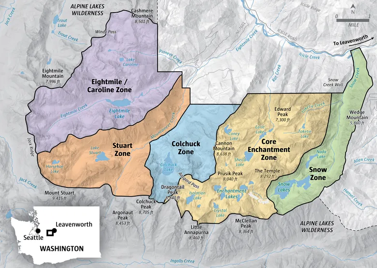
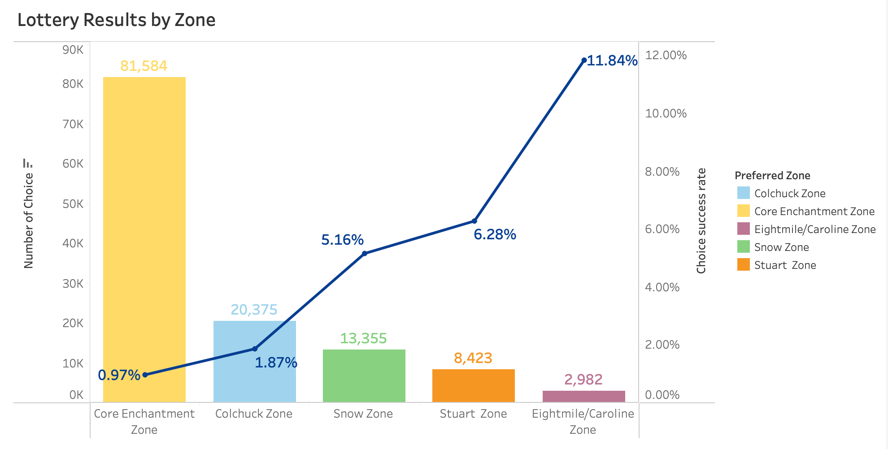
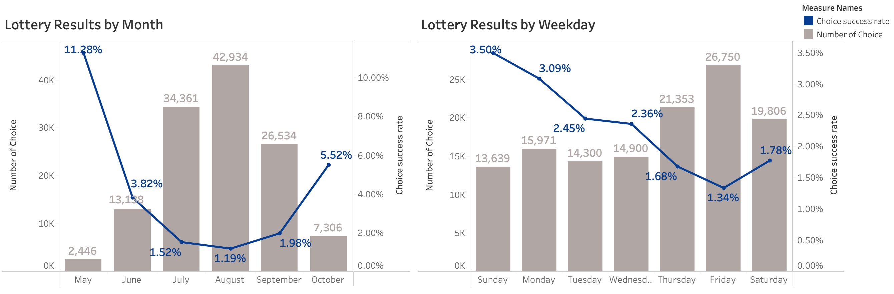
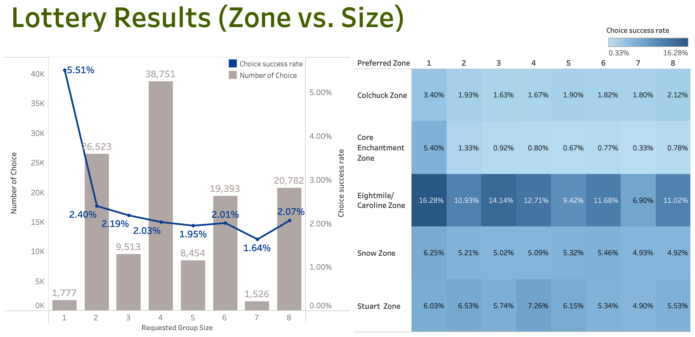
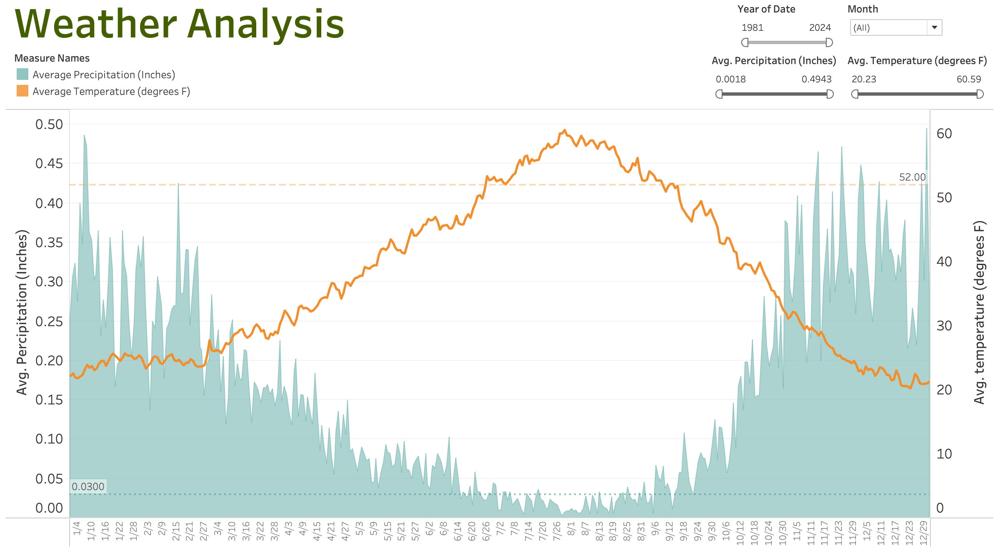
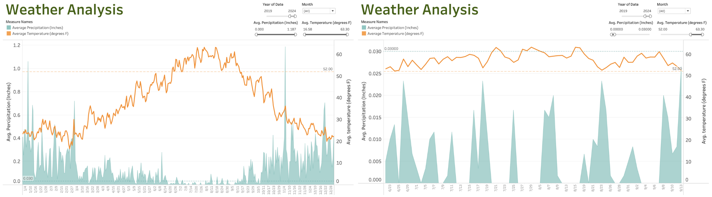
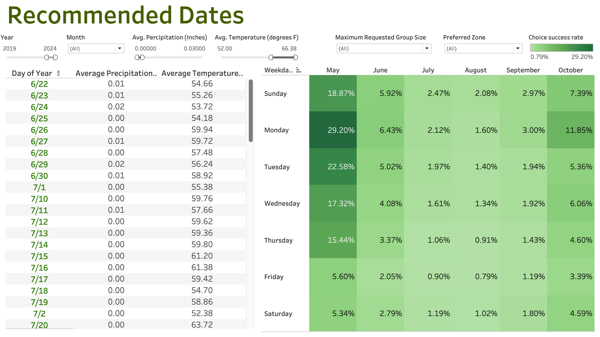

Chasing the Enchantments: A Data-Driven Approach to Beating the Permit Odds
Tableau | Python | Business Intelligence | Data Storytelling

At-a-glance
- Problem: Lottery odds feel like pure luck; applicants want data-backed strategies.
- Data: 42K+ 2024 applications + 40+ years of daily weather to analyze zone, timing, group size.
- Outcome: Patterns show higher success in less-trafficked zones and midweek dates; solo or 2-person groups win more. Interactive dashboard lets users simulate best dates.
Intro
The Enchantments, nestled in Washington State’s Alpine Lakes Wilderness, are among the most coveted backcountry hiking destinations in the Pacific Northwest. With pristine alpine lakes, jagged granite peaks, and fragile ecosystems, the area draws tens of thousands of hopeful hikers each year. To protect this landscape, access is controlled by a competitive permit lottery system. Applicants submit preferred zones, dates, and group sizes, but with overall success rates often below 10%, landing a permit can feel like a roll of the dice, especially for the ultra-popular Core Enchantment Zone, which sees success rates dip below 1%.
Everyone says the Enchantments lottery is just luck — but what if it isn’t? What if winning a permit is less about chance and more about knowing how to play the game?
This project sets out to explore exactly that. By analyzing 2024 lottery application data and historical weather patterns, I uncovered hidden trends in zone selection, group size, and timing that can shift the odds in your favor. From understanding when to apply to which days offer the best balance of solitude and sunshine, this data-driven approach helps turn guesswork into strategy and makes your shot at the Enchantments just a little more winnable.
Below is a map illustrating the five zones hikers can select when applying for a permit:

To uncover these trends, I analyzed over 42,000 applications from the 2024 Enchantments permit lottery, paired with over 40 years (1981–2024) of daily temperature and precipitation historical data. To balance recency with reliability, I focused primarily on the most recent 5-10 year window to evaluate seasonal patterns and hiking conditions.
Zone Popularity vs. Success Rates
Not all zones are created equal — especially when it comes to your chances. The Core Enchantment Zone may be the most in-demand zone in the wilderness permit system, but it's also the most competitive by far, with over 81,000 selections and a success rate below 1%. On the opposite end, the Eightmile/Caroline Zone often being overlooked, had fewer than 3,000 selections yet emerged with the highest success rate (11.8%). For applicants seeking to tilt the odds in their favor, understanding zone dynamics is crucial. Choosing less-trafficked zones like Stuart or Snow can significantly increase your chances, especially when prioritized in early choice ranks. Sometimes, the best strategy is to go where fewer others are looking. 
Timing Insights
Timing plays a crucial role in shaping your chances of winning the Enchantments lottery. To explore this, I first looked at application volume and success rates across different months and weekdays.
The overview charts below reveal a distinct inverse relationship between popularity and success. August drew the highest volume with over 42,000 applications, but had one of the lowest success rates at just 1.19%. In contrast, May and October saw fewer applicants and correspondingly, higher success rates of 11.28% and 5.52%, respectively. A similar trend played out across weekdays: Friday received nearly 27,000 entries but had the lowest success rate of only 1.34%, while Sunday and Monday offered the highest odds of winning—around 3.5% and 3.09%, respectively.

To go beyond the surface, I further broke down the trends by zone:
- Core Enchantment Zone experienced extremely low success rates year-round, especially in July and August where odds dipped below 1%.
- Eightmile/Caroline Zone was a hidden gem, with the highest success rates—peaking at 34.38% in May and staying favorable across most months.
- On a weekly basis, Core Zone remained the least forgiving, while Eightmile/Caroline Zone again stood out on Sundays and Mondays (success rates around 18%).
Group Size Analysis
When it comes to increasing your odds in the Enchantments lottery, group size plays a surprisingly decisive role, yet it's one of the most commonly overlooked factors. Solo applicants (group size = 1) saw the highest overall success rate at 5.51%, significantly outperforming all larger group sizes. In contrast, groups of 4–7 people, which made up the majority of entries, consistently hovered just under 2%, with group size 7 hitting the lowest odds at only 1.64%. This trend suggests a strong inverse relationship between group size and success likely due to the limited number of available permits per day, where accommodating larger groups becomes more difficult.
Digging deeper into zone-specific trends, the disparity becomes even more pronounced. For example, solo applicants targeting the Eightmile/Caroline Zone enjoyed an impressive 16.28% success rate, while larger groups applying for popular zones like the Core Enchantments saw their odds drop drastically—down to just 0.33% for groups of 7. Across nearly every zone, smaller groups consistently achieved higher success rates likely benefiting from greater flexibility in permit allocation and fewer logistical constraints on group sizes.

Weather Trends & Seasonality
When applying for a permit to the Enchantments, most applicants focus on beating the odds—but what if you could also optimize for good weather? By combining lottery data with historical climate trends, it’s possible to improve not just your chances of getting in, but also your experience once you're there.
To understand seasonal weather patterns, I first analyzed over 40 years of historical data (1981–2024). The results revealed a reliable window of favorable conditions typically between mid-July and late August—when temperatures are warmer and precipitation is minimal. This period tends to offer the best balance of dryness and comfort, making it a practical target for most applicants.

To explore this further, I zoomed in on more recent years (2019–2024), accounting for the growing impact of climate variability. While the general mid-summer trend still holds, the data reveals increasing week-to-week fluctuations, suggesting that some days within “peak season” now carry more risk of poor weather than in the past. I also explored a scenario where an applicant submits desired entries for days with average temperatures above 52°F and precipitation below 0.03 inches. This filter adds a strategic layer but also narrows flexibility, highlighting the tradeoff between ideal weather and broader availability.

Best Selection Strategy
To bring it all together, I built an interactive dashboard that lets applicants explore their optimal strategy based on personal preferences. By selecting a target zone and preferred group size, users can immediately see which months and weekdays historically offer better odds. For those who also value ideal hiking conditions, optional weather filters allow users to pinpoint past application dates that aligned with warmer, drier days. This tool transforms guesswork into informed decision making, helping applicants find the best fit entry dates based on what matters most to them.

What if getting into the Enchantments wasn’t just a game of luck? With lottery and weather data, there’s a smarter way to plan and win.
To maximize your chances:
- 🎯 Pick the right zone: Less competitive areas like Eightmile/Caroline and Snow Zone offer higher acceptance rates.
- 🗓️ Submit for midweek dates: Mondays and Tuesdays show significantly better success rates than weekends.
- 👥 Keep your group size small: Solo or 2-person entries consistently outperform larger groups.
- 🌤️ Use weather filters cautiously: Applying thresholds (e.g., temp > 52°F and rain < 0.03”) may limit available date options—consider the tradeoff between ideal weather and permit availability.